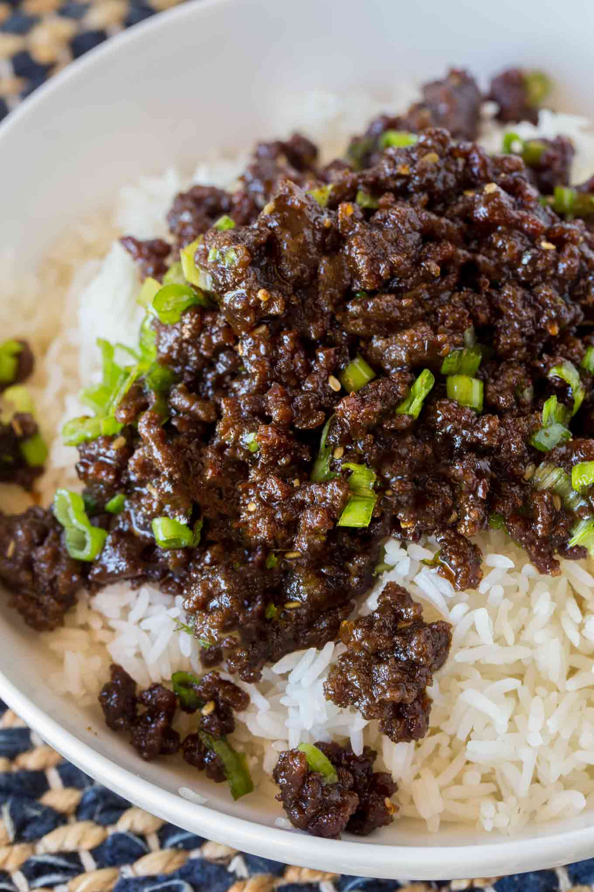
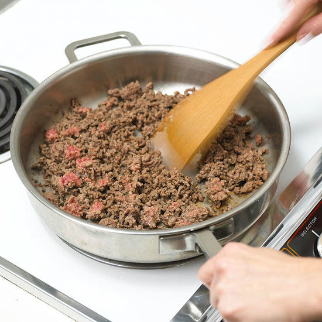
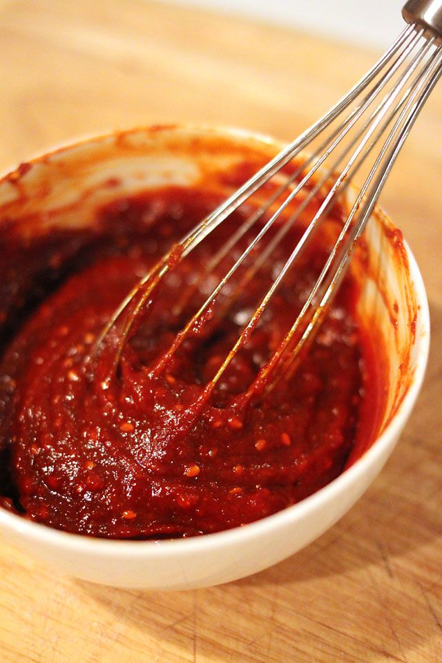
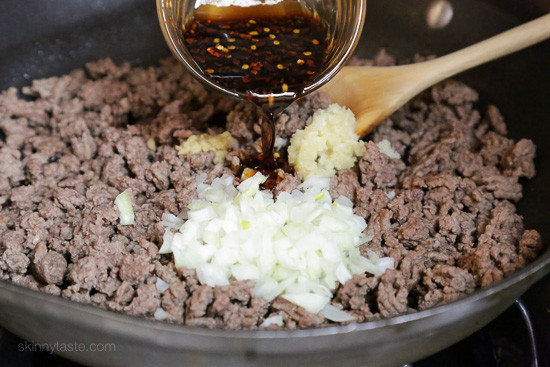

<div class="container">
  <div class="row">
    <div class="col-sm-12">
      <i class="material-icons" style={{ fontSize: "75px" }}>
        account_circle
      </i>
      <strong>Pasta_Lover62</strong>
      <a class="float-right btn btn-outline-primary">
        {" "}
        <i class="Subscribe" /> Subscribe
      </a>
    </div>
  </div>
  <div class="row">
    <div class="col-sm-1" />
    <div class="col-sm-5">
      <h2> Korean-style Gochujang Ground Beef </h2>
      
    </div>

    <div class="col-sm-4">
      <h4>Ingredients</h4>
      <ol>
        <li>1 lb ground beef</li>
        <li>1/4 cup Sesame oil </li>
        <li>3 Tblespoon Gochujang </li>
        <li>1/2 cup Soy Sauce </li>

      </ol>
    </div>
  </div>
  <div class="row">
    <ul class="list-unstyled">
      <li class="media">
        
        <div class="media-body">
          <h4 class="mt-0 mb-1">step 1</h4>
          Brown the ground beef on a pan. Remove from heat
        </div>
      </li>
      <li class="media my-4">
        
        <div class="media-body">
          <h4 class="mt-0 mb-1">step 2</h4>
          Mix sesame oil, gochujang, and soy sauce.
        </div>
      </li>
      <li class="media">
        
        <div class="media-body">
          <h4 class="mt-0 mb-1">step 3</h4>
          Add the sauce mixture to the ground beef and mix on low heat. Serve with rice or lettuce wraps.
        </div>
      </li>
    </ul>
  </div>
</div>
